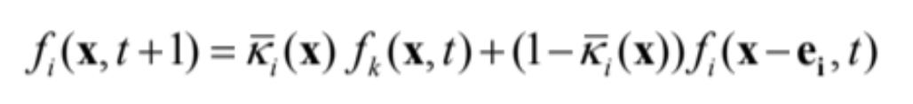

Artistic rendering
Our project is based on the framework set by “A Framework for Digital Watercolor” by P. Brien[2], where we divide the watercolor simulation into four parts: the brush, the fluid (water) simulation, the pigment flow (model of paper), and color calculation. The brush is implemented as a simple discrete sampling of a circle, in which the pixels covered by the circle receives pigment depending on how fast the brush is moving. The water simulation is handled by using the modified LBM equations given below[1].
The main difference to the original LBM’s stream & collide equation is the addition of partial bounce-back during streaming, even when no boundary cells are involved. This is done by introducing a blocking factor at each cell’s distribution functions, which then work to simulate the streaming step being “partially pushed back”. This is done to simulate back-runs and granulation that is characteristic to realistic watercolor movement. After the water flow has been simulated, we also have to simulate the actual pigment flow to achieve correct reflectance at different sites. We do this by modeling the paper as 3 layers: the surface layer, the flow layer, and the fixture later. The key idea is that the pigment will flow spatially across cells, as well as flow into different layers of the paper at each cell, dependent on the water distribution functions. After the pigment flow is handled, we calculate the reflectance of each cell using the Kubelka-Munk model. The KM model allows us to composite multiple layers of pigment (or color) in the same cell to create a realistic looking color for the overlapping watercolor. Although the main framework of the project is still relatively same as that of Patrick O’ Brien’s, the our methods in executing some of the four main steps in the algorithm differ substantially in some cases. The main reason for the differences was mostly due the insufficient explanations in our reference[2] or the ineffectiveness of the methods described. The details on the differences in some steps of the watercolor simulation is given in the next section.
The first major area in which our implementation differed from either paper was pigment_Pf.glsl, which handled the deposition of pigment from the surface layer to the flow layer. This was done because the papers’ method was not reliably transferring the pigment, and would often leave pigment stranded in the surface layer even after no water remained to transport it. Additionally, we wrote the rest of the code assuming pigment data was in terms of absolute quantity, but it could have been the case that the papers assumed the storage of concentration per unit of water. To fix these issues, we did a slightly simpler formula for computing pigment transfer. Given the fraction of water flowing out of the surface and into the flow layer, we would transfer the same fraction of pigment into the pigment’s flow layer. This made pigment transfer very simple and reliable. An additional change made was having a small minimum amount of pigment transferred even in the case of no water flow, but as long as the cell had density and there was pigment to transfer. This was done specifically to counter cases where a cell was saturated with water (as determined by Beta) but had no pigment and therefore could not receive any pigment from the surface layer. A second significant difference from the papers was the handling of the blocking factor. Supposedly, the blocking factor is set to the height field of the cell for non-pinned cells. However, we found that the results looked much better if the blocking factors were all kept much lower. To that end, we reduced all blocking factors by a factor of 60, which was arrived at through experimentation. The last area that our code could be very different from the ideal model is the brush handling. The papers hardly go into any detail about their implementation, save for using a circular brush and considering pixels fully inside to be under the brush. After trying many methods and refining each iteration, we arrived at a rather complicated shader for the brush. First, it takes the line segment of the current mouse position and the previous mouse position and considers any cell within a threshold distance to be under the brush. This creates a smoother brush and reduces noticeable sampling artifacts. Then, we compute a scaled brush direction, which influences which distribution functions to increase more. The greater the magnitude of the brush vector, the more we increase the corresponding distribution functions. However, no matter the brush vector, we define a minimum amount to increase the distributions by to effect more visible flow in the end result. The surface pigment and water are both increased, with a slight exponential falloff towards the extremities of the brush. A key implementation detail is that none of the values altered by the brush shader are plainly increased. Instead, they are “averaged up” to a certain maximum. This makes the brush application look more even, and eliminates issues with large distribution function values becoming unstable. Various minor edits we made include clamping of values to either ensure they remained non-negative, to ensure they did not grow too large, or to ensure that a minimum value was used. The last two especially are prevalent throughout all the shaders, as a way of controlling values to be within expectations. For example, the pigment deposited onto the fixture layer is clamped to be between 0.003 and less than a percent (depending on various factors) of the total pigment in the flow layer. Debugging was extremely tedious for this project. Not only are all the shaders interdependent, it is very hard to verify intermediate results as our only output is the rendered outcome of the entire pipeline. As a result, trying to pin down the cause of a bug involved lots of manual perturbation to try setting some values to constants, commenting out different blocks of code, writing simplified shaders with easily verifiable behavior to test the other shaders, etc. Essentially, it was one big game of guess and check. Furthermore, the compiler gave very vague error messages, so even syntax errors could take a few minutes to find and solve. Lastly, sometimes we would find out that a parameter was off by an order of magnitude or more the entire time, and once we fixed it, things would work but we would need to adjust nearly a dozen other parameters to complement the new value. Adjusting the parameters was especially challenging, as small changes to one of the parameters or the code could warrant hours of testing combinations of the other parameters. We learned that it is not always the case that some complicated method in a paper is correct or that it will produce the best visual results (especially when there are more than 5 hyper parameters involved). In fact, better results in computer graphics can sometimes be achieved by taking shortcuts behind the scenes rather than staying true to the mathematics. Results Here we showcase some of the results obtained from our application. Some of the notable characteristics of watercolor are shown, such as the way the colors mix, edge darkening, back-runs, and granulation. We also link a video that contains drawing demonstration using our application. DISCLAIMER: The drawing in the video looks laggy due to connection latency (it was filmed using screen sharing). This is NOT what it usually looks like.
[1] N. Chu et. al, MoXi: Real-Time Ink Dispersion in Absorbent Paper http://visgraph.cse.ust.hk/MoXi/moxi.pdf
[2] P. Brien, A Framework for Digital Watercolor http://oaktrust.library.tamu.edu/bitstream/handle/1969.1/86068/OBrien.pdf?sequence=1
[3] Processing, https://processing.org/
[4] OpenGL Documentation,https://www.khronos.org/registry/OpenGL-Refpages/es1.1/xhtml/ http://www.shaderific.com/glsl-functions/?fbclid=IwAR087r1iqHFfS1mUQ7EIOUFQqq163duexiVnkqVDEpOlYufVjk4iKd6vx3E
Richard Chen: Wrote the GUI, handled the Processing framework to integrate the shaders, debugged the shaders, made significant changes to the shaders, extensive testing of parameters
Dahyun Kim: Built and debugged most of our initial versions of the OpenGL shaders (before the final tweaks). Written a fair amount of deliverables (Proposal, Milestone Webpage, Presentation, Final Write-up)
Trang Le: Wrote the four operations of water simulation and output them into four initial shaders: streaming, velocity and density, boundary, and collision. Reference from different papers to compare different approaches. Work on version control. Finish the deliverable web page, video and art works for demo of the project.